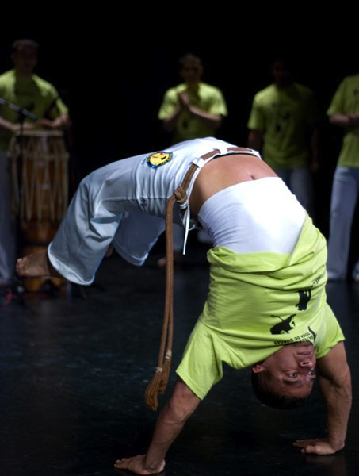
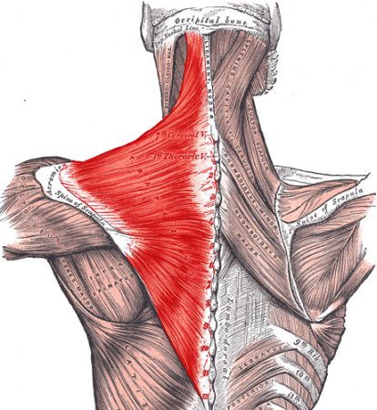
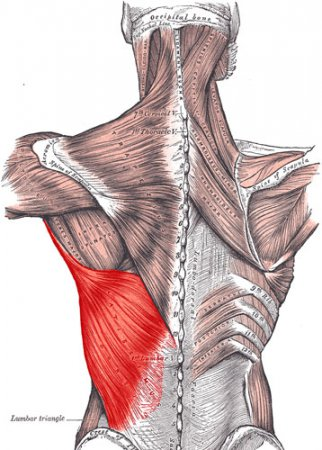
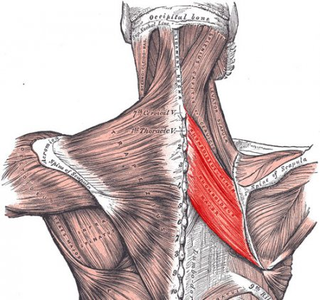
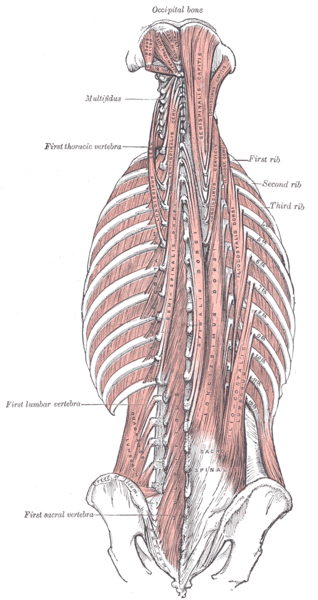

Мышцы спины для «чайников»

Мышцы спины — одни из самых сильных в человеческом теле. Но про них часто забывают, отдавая предпочтение тем мышцам, которые создают «крутой» визуальный эффект — грудь, бицепсы или пресс. Но, спина — это основа многих элементов в капоэйре и, сильная и здоровая спина чрезвычайно важна для развития функциональной силы и улучшения ваших возможностей. Эти мышцы играют важную роль в контролировании ваших движений и в предотвращении мышечного дисбаланса, который может привести к травмам. Кроме того, правильная осанка — это не только полезно, но и красиво. В повседневной жизни и физической деятельности, спина выполняет много сложных разнообразных движений, связанных ещё и с мышцами живота, бедер и поясницы. Таким образом, построение сильной спины — одна из самых правильных инвестиций, которую вы можете сделать. Тружно написать насколько спина важна в том или ином элементе капоэйры, потому что она участвует в каждом нашем движении, поэтому этот пост — скорее просто обзор мышц спины.
Мышцы спины многочисленны, располагаются в несколько слоев, и сильно интересующийся может посмотреть анатомический атлас, а я расскажу о самых „популярных“:
- Трапециевидные мышцы (лат. musculus trapezius), которые чаще называют «трапециями», покрывают верхний отдел спины и заднюю часть шеи, а по форме похожи на треугольник (если рассматривать одну мышцу с одной из сторон). Поскольку обе мышцы вместе имеют трапециевидную форму, мышцы получили соответствующее название – трапециевидные мышцы.

Назначение данных мышц заключается в том, чтобы, сокращаясь, поднимать лопатки, опускать их или приближать к позвоночнику. Верхние пучки поднимают лопатки, нижние – опускают их, все вместе – прижимают лопатки к позвоночному столбу. Основание мышцы обращено к позвоночнику, а её вершина – к латеральному концу лопатки. Разнообразные au и стойки в капоэйре очень сильно зависят от развитости ваших «трапеций».
Упражнения, тренирующие трапециевидные мышцы, легко отличить от других – они связаны с подниманием и опусканием плеч. Существует немало упражнений, при выполнении которых включаются в работу трапеции, но основным упражнением на эту группу считаются шраги.
- Широчайшие мышцы (лат. musculus latissimus dorsi) расположены на поверхности нижней части спины, при этом верхняя часть этой группы мышц находится под трапециевидными мышцами.

Назначение данных мышц заключается в том, чтобы, сокращаясь, приводить плечи в направлении туловища и вращать внутрь руки.
Нагрузка на данную группу мышц присутствует, в той или иной степени, практически в любых упражнениях на мышцы спины: тяга штанги в наклоне, тяга гантели в наклоне с упором в скамью и т.д. Но самыми доступными и очень эффективными являются подтягивания. Широчайшие находятся под нагрузкой в любом элементе капоэйры и развитие их поможет вам красиво и легко выполнять, например, macaco.
- Ромбовидные мышцы (лат. musculus rhomboideus) расположены под трапециевидными мышцами и называются так, поскольку имеют форму ромба. Рассматривая эту группу мышц, стоит иметь в виду, что по сути это две разные мышцы – большие (лат. musculus rhomboideus major), которые находятся между лопатками и малые (лат. musculus rhomboideus minor), которые также находится между лопатками, но расположены чуть выше.

Назначение больших ромбовидных мышц заключается в том, чтобы, сокращаясь, приподнимать лопатку и вращать её, а задача малой ромбовидной мышцы – приводить лопатки к позвоночнику.
Ромбовидные мышцы включаются в работу при выполнении многих базовых и вспомогательных упражнений на верхнюю часть спины, поэтому специально искать эти упражнения не обязательно.
- Мышца, выпрямляющая позвоночник (лат. Musculus erector spinae) — располагается наиболее поверхностно среди глубоких мышц спины. Является самой мощной и длинной мышцей спины. Боле того, с этой мышцей связана целая система более мелких вспомогательных и поддерживающих мышц, образующих очень сложную мышечную группу.

Данная мышца при двустороннем сокращении разгибает позвоночный столб и удерживает туловище в вертикальном положении. При одностороннем сокращении наклоняет позвоночный столб в соответствующую сторону. Верхние пучки мышцы тянут голову в свою сторону. Также участвует в процессе дыхания.
Упражнения — гиперэкстензии и «супермен». Применительно к капоэйре, эта мышца играет решающую роль при выполнении мостиков, прогибов и всяких перекатов.
Здоровая и сильная спина позволит вам выполнять множество движений, таких как macaco, ponte, s-dobrado, а также разнообразные стойки на руках. Естественно, что если мышцы спины недостаточно развиты, выполнять эти элементы будет проблематично ила даже травмоопасно. Поэтому, отнеситесь к своей спине со всей серьезностью, да и вообще, дружите с ней и со своим организмом!
по материалам rodamagazine